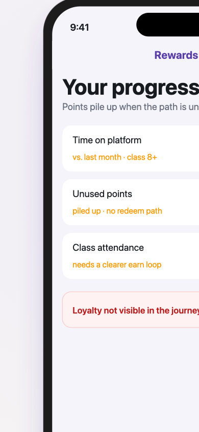
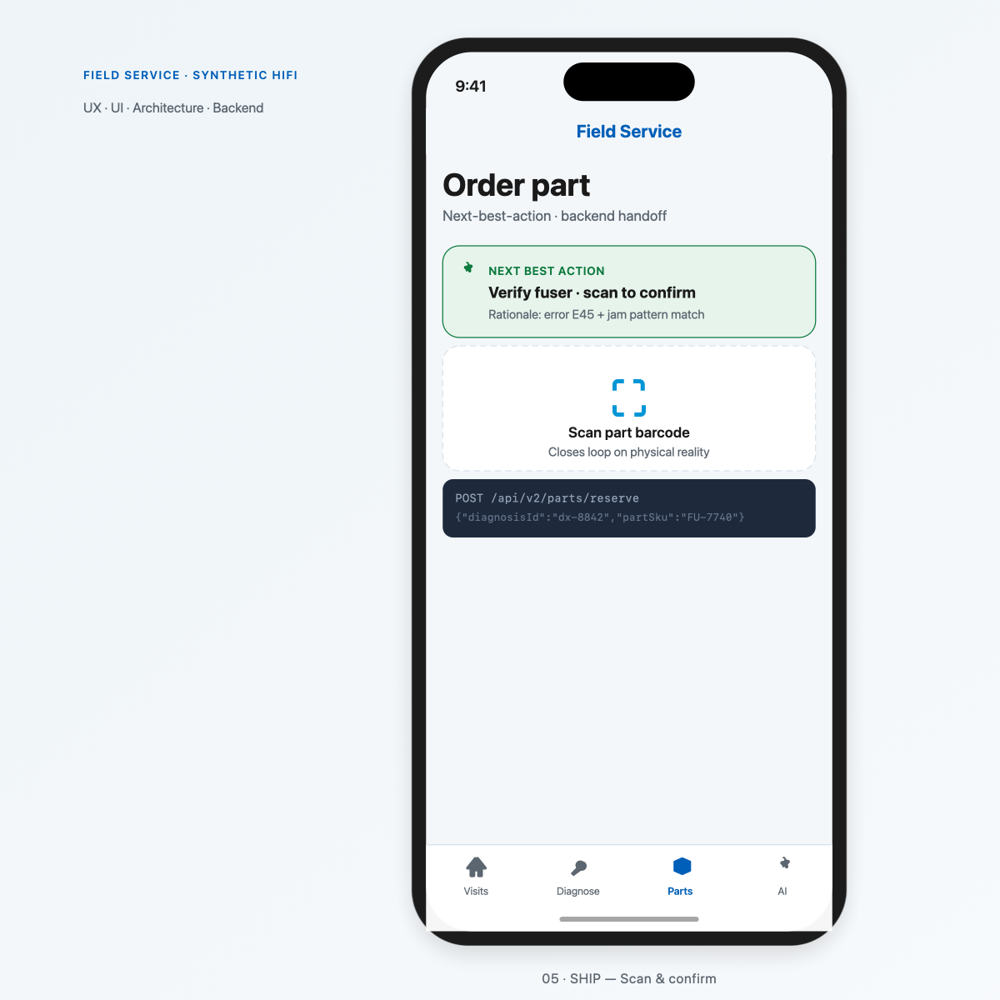
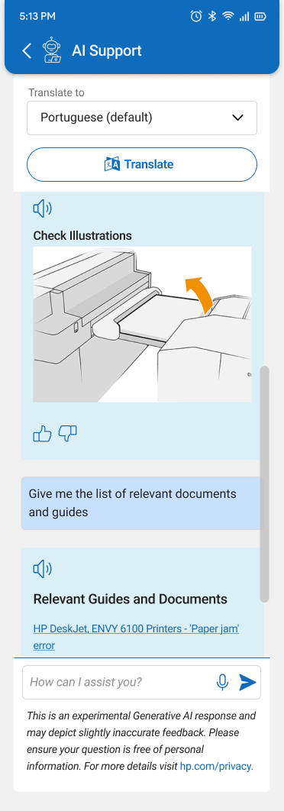

.png?updatedAt=1775226802133)

Selected work
What does a loyalty ecosystem for 20m+ learners look like?
The rewards programme serves 23M+ learners who need one clear earn-and-spend story before marketplace UI and avatar work scale.
I led foundational UX and system design—production-aligned stimulus, moderated sessions across US and India, and ship-ready specs for product and engineering.
How do we help field technicians act faster with AI they can trust?
Technicians resolve faults on the truck; AI only helps when the next part and action are defensible to the customer and dispatch.
I led system design and UX for diagnosis-to-parts—AI state patterns, override flows, and React Native handoff specs validated with pilot technicians.

How do field reps run robotic surgery logistics inside the hospital?
Field reps coordinate orders, serials, delivery, surgical use, and returns inside the hospital—without calls and spreadsheets splitting the visit.
I led UX and system design for one mobile thread—serial-level tracking, surgeon preferences on arrival, and auditable close with clinical ops and engineering.

How I run programmes
Four moves · ~2 min read · same proof as the cases above
-
Map the system
Find what’s actually broken before you fix the loudest symptom.
15 interviews US + IN

See the problem map -
Choose one direction
Pick the move that matters, be clear what would change your mind, and say it plainly.
One next-best action 3 operating contexts

See the decision -
Ship the essentials first
Get the core journey working end to end before polishing surfaces that might change.
10-beat IA Visit-context order
 See the order path
See the order path
-
Measure what changed
Look at what actually moved after launch — including what didn’t go to plan.
Field walkthroughs Frame-mapped evidence

See the evidence
Next step
Have a decision worth a second opinion?
Book 30 minutes and I’ll walk your bet through the same four moves — a product call, an upcoming launch, or results that are hard to read.